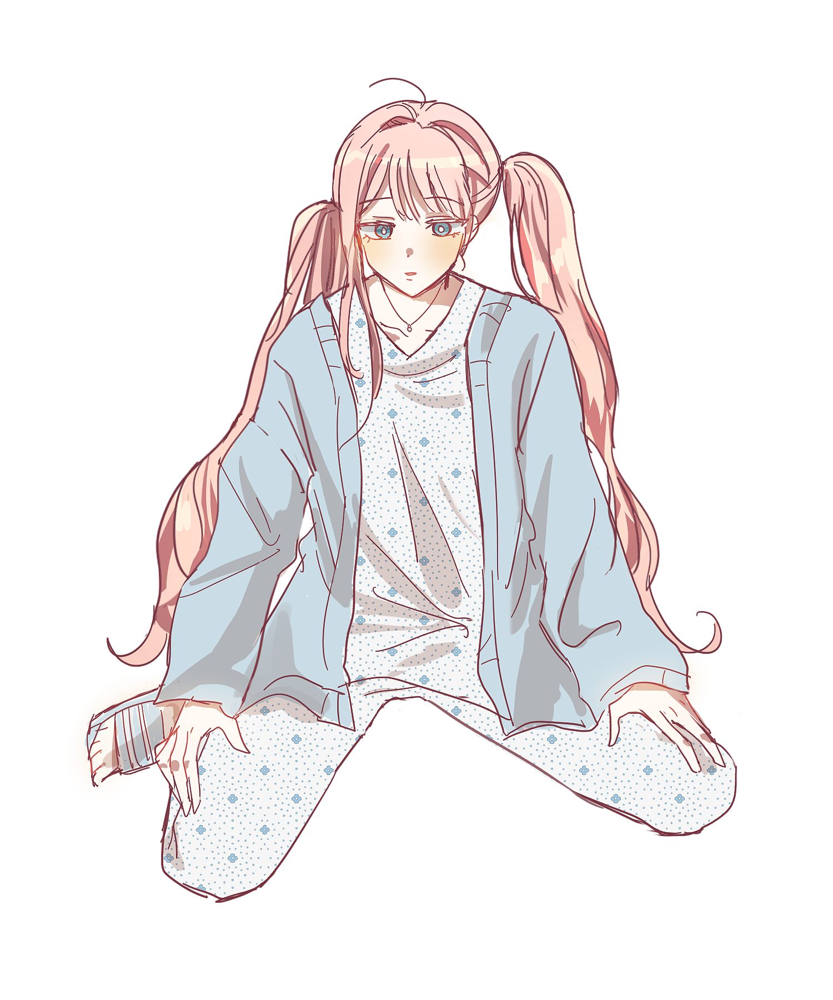

캐치 프레이즈
걸어다니는 종합 병원
한마디
“ 마라탕이 먹고 싶어요…. ”
외관
차분한 분홍빛의 머리카락은 잔머리투성이의 양 갈래로 대충 묶어두었다.(이마저도 양쪽의 위치가 맞지 않다.) 창백할 정도로 흰 피부, 벽안에 살짝 맹한 눈매, 붉게 물들어 있는 양쪽 뺨은 꽤 앳된 얼굴이다. 둥근 형태의 하얀색 보석이 돋보이는 목걸이를 차고 있으며 병원복 차림에 얇은 하늘색 가디건을 걸치고 있다. 신발은 하늘색 삼선 슬리퍼.
이름
솔잎새
나이
21세
키/체중
155cm / 42kg
성격
Keyword: 무책임한, 비관적인, 유리멘탈
입원한 환자가 웬 외출?! 주변에서 아무리 걱정해 주고 챙겨줘봤자 뭐 하나. 식도염, 위염을 달고 살면서도 매운 음식을 끊지 못해서 늘 병원과 약국의 단골 환자며, 그렇다고 해서 운동조차 제대로 하지 않는다. 최근에는 도로 건널 때에 스마트폰 화면만 바라보면서 건너다가 차 접촉 사고를 당하질 않나. 이미 성인인데도 어른스럽지 못하고, 생각이 짧으며 무책임하다.
멋대로 사는 인생 치고는 스스로의 삶에 비관적이다. 툭하면 부정적인 말이 튀어나오기 일쑤다. 그래서 그런지 멀쩡한 친구도 얼마 없는 모양이다.
몸도 마음도 유리. 잔병치레가 많은 편인데 그만큼 멘탈도 튼튼하지 못하다. 쉽게 상처받기도 하며 방어기제로 쉽게 상처 주기도 한다.
기타
생일 : 12월 17일
혈액형 : B형
좋아하는 것 : 맵고 자극적인 음식, 마라탕
싫어하는 것 : 약, 병원, 아픈 것
취미 : sns에 먹은 음식 사진 업로드하기
○○대학교 식품영양학과 2학년으로 재학 중인 대학생이자 어느 종합병원에 입원해있던 환자. 한 달 전 횡단보도를 건너다 교통사고를 당해 다리뼈에 금이 가서 2주 동안 입원 중이었다고 한다. (현재 치료를 받고 거의 회복된 상태.) 보호자의 눈을 피해 몰래 외출을 나오게 되었는데 이유는 어이없게도 자신의 최애 마라탕 집이 그리워서다.
병원복 차림에 가디건만 입은 채 자신의 카드 지갑만 냉큼 가지고 마라탕 집을 가기 위해 지하철 탑승을 한 후 구석의 노약자 좌석에 앉아있었다. 한 손에 스마트폰을 쥔 채로 평소 즐겨 하던 sns를 하다가 꾸벅꾸벅 졸고 있었다. 병원복 차림새 때문인지 힐끔힐끔 다른 이들의 시선을 받긴 했지만, 그런 것쯤은 잠깐이면 참을 만했다. 다음 역에서 내리면 그만이니까….
소지품
목걸이, 딸기사탕, 카드지갑
관계
에이다 B. 바오레타
식품영양학과 대학생인 솔잎새가 실습으로 나간 중학교에서 한문 선생님인 에이다를 만나서 안면을 튼 사이가 되었다. 에이다의 특이한 말투 덕분에 그를 기억하고 있던 잎새는 지하철에서 다시 인사를 건네게 되었다.
정수미
sns 친구였으나 서로 오프라인 정모 등 큰 교류는 하지 않았던 상태. 대신 서로의 취미생활 관심사는 어느정도 파악이 된 상태다. 서로의 일상을 열심히 살아가다가 지하철에서 처음으로 대면으로 인사를 나누게 되었다.